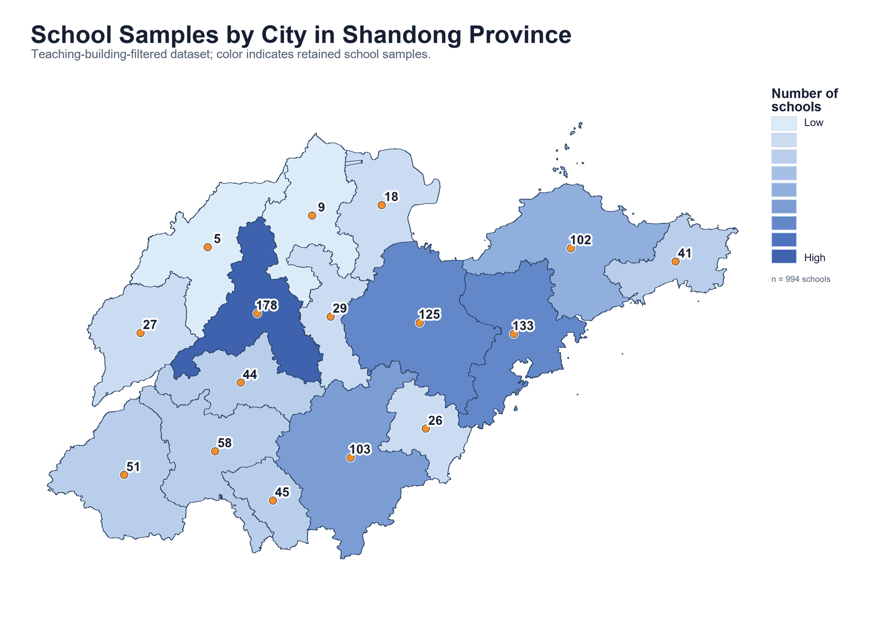
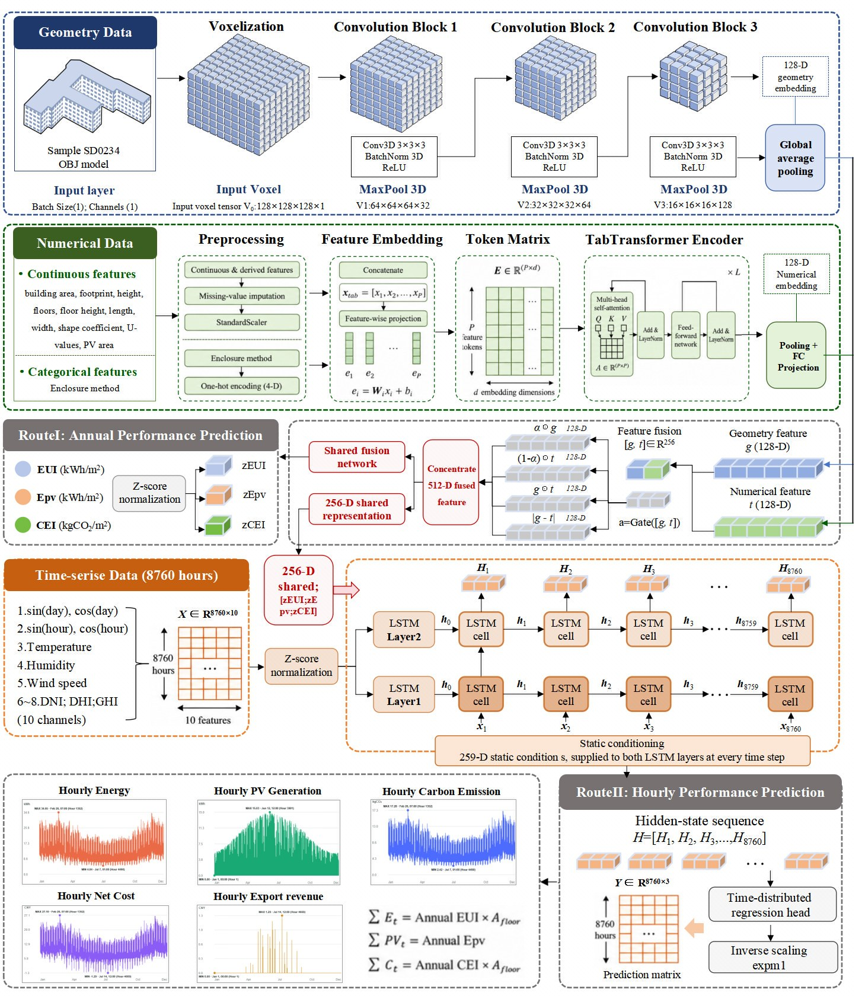
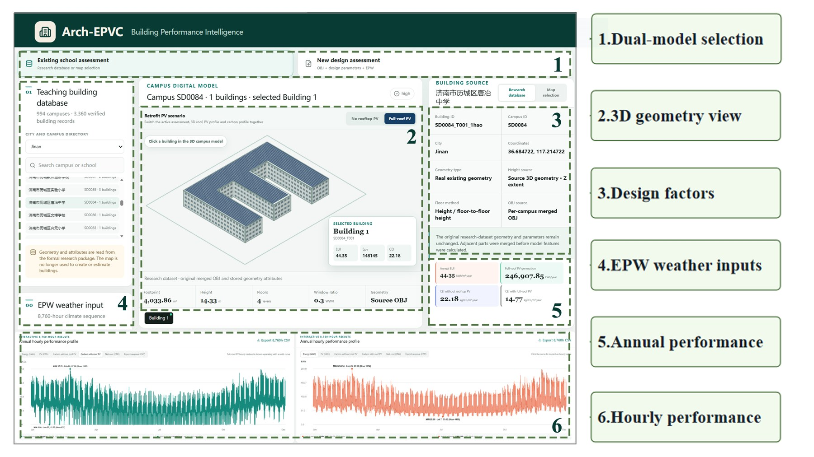

Why this project?
School buildings have intensive daytime use and considerable roof/facade PV potential. Annual indicators alone can hide the hourly mismatch between building load and PV generation. This project therefore supports both annual-scale performance prediction and hourly-scale load-PV-carbon assessment.
Coverage across Shandong Province.
Included in the platform snapshot.
Eight example workbooks included in the repository; full archives distributed separately.
Dataset
The public package includes structured numerical variables, annual simulation indicators, OBJ geometry summaries, hourly samples, simulation scripts and metadata manifests.
- 3D OBJ building massing models and geometry-derived attributes.
- Envelope thermal coefficients inferred from construction period and standards.
- Annual EUI, PV generation, carbon intensity and economic indicators.
- Hourly energy, PV and carbon samples with a complete manifest for the full archive.


Prediction framework
The framework uses a dual-scale strategy. The annual branch fuses geometry and numerical features. The hourly branch further incorporates weather/time-series inputs to estimate dynamic energy-PV-carbon behavior.
- 3D CNN: extracts building massing and roof/facade morphology features.
- TabTransformer: processes structured building and envelope features in the bundled platform model.
- LSTM: uses shared static conditions and hourly weather/time inputs to predict performance.
Arch-EPVC platform
The included platform source connects building geometry, tabular design variables and browser-based ONNX prediction models to support design comparison and retrofit assessment for school buildings.
It can be used for new school design evaluation, existing teaching-building PV retrofit assessment, carbon-reduction screening and scenario comparison.

Repository structure
data/ processed data, geometry package, samples and metadata.
simulation/ Grasshopper files and helper scripts.
research/ training source, paired PyTorch checkpoints, preprocessing artifacts, platform source and browser ONNX models.
models/ version and reproduction notes.
platform/ platform overview materials.
Numerical datasetHourly manifest
Original training scripts require local path configuration. The packaged artifacts have not been independently retrained or revalidated. Full hourly archives and the repository address will be linked once uploaded.